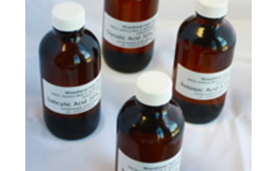
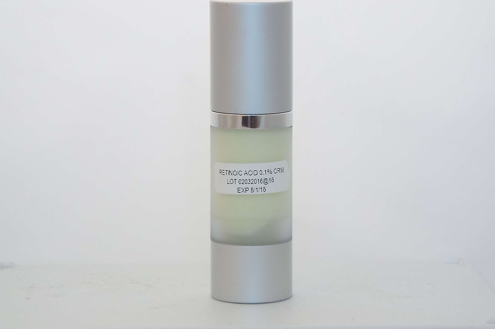

Compounding for Aesthetics

Aesthetics is devoted to Non-responsesurgically treating the skin and becoming proactive in skin care.
The skin is our largest organ and functions as a protective covering, a sensing organ, an oil producer and an elimination organ (it clears toxins from the body through evaporation and perspiration). Young skin is flexible, elastic, smooth and well hydrated.
It is important to protect the skin against damage to maintain its elasticity, appearance and overall health. Preventive methods include a healthy diet, supplements, daily moisturizing, sunscreens, not smoking, little drinking, and using hats, visors, sunglasses, etc. against UV light.
If damage or aging has occurred, anti-wrinkle, skin renewal, moisturizing and barrier-repair treatments are available to help stimulate the skin's natural production of collagen to help restore the structure of the skin and smooth out wrinkles.
Woodland Hills Pharmacy's aesthetic medicine formulas are created using premium pharmaceutical-grade active ingredients that have been carefully selected for their synergistic properties. Our formulations whether a topical cream or a chemical peel, are compounded under strict quality standards.
Azelaic Acid Cream
- Azelaic Acid 15% Cream
- Azelaic acid is used to treat mild to moderate acne. It works by killing acne bacteria that infect skin pores. It also decreases the production of keratin, which is a natural substance that promotes the growth of acne bacteria.
- Azelaic acid is also used as a treatment for rosacea, due to its ability to reduce inflammation. It clears the bumps and swelling caused by rosacea.
- Azelaic acid has been used for treatment of skin pigmentation including melasma and post inflammatory hyperpigmentation, particularly in those with darker skin types. It has been recommended as an alternative to hydroquinone.
- Strengths available for purchase with a prescription from your doctor's office:
Azelaic Acid 15% Cream
Azelaic Acid 20% Cream - Prices available for physician's office upon request

BLT Cream
- BLT Cream
- Pre-procedure topical anesthetics are effective in the numbing of the epidermis prior to laser and cosmetic procedures.
- Triple anesthetic creams can provide effective cutaneous anesthesia as early as 15 minutes after application. BLT contains three active ingredients including Benzocaine, Lidocaine and Tetracaine.
- The cream base is never runny and milled thuroughly two times to ensure premium quality. We provide different strengths of Lidocaine as well as 3 product sizes: 120 gm, 240 gm, 480 gm (1 lb) jars.
- Discounts available for higher quantities.
- Shopping cart here
Chemical Peels
- Chemical Peels
- A chemical peel is a body-treatment technique used to improve and smooth the texture of the facial skin using a chemical solution that causes the dead skin to slough off and eventually peel off. The regenerated skin is usually smoother and less wrinkled than the old skin.
- Chemical Peels are packaged in 4-oz. glass bottles
- Strengths available for purchase
with a prescription from your doctor's office:
Glycolic Acid 20%, 30%, 40%, 50% Soln
Salicylic Acid 10%, 20% Soln
TCA 10%, 15%, 20%, 25%, 30% Soln
Retinoic Acid 0.3%, 0.4% Soln
Jessner's 14%, 17% Soln - Discounts available for higher quantities.
- Shopping cart here

Cosmelan MD Kit
- WHP Cosmelan MD Kit
- WHP Cosmelan MD Compound Treatment kit is almost equivalent to the active ingredients in the original Cosmelan European Formula, at a fraction the price. We made some adjustments to this classic formulation that we know you will like!
- WHP Cosmelan MD will help treat the following:
Hyperpigmentation
Melasma
Freckles
Acne
Sun Damage - Strengths available for purchase
with a prescription from your doctor's office:
Glycolic Acid 20%, 30%, 40%, 50% Soln
Salicylic Acid 10%, 20% Soln
TCA 10%, 15%, 20%, 25%, 30% Soln
Retinoic Acid 0.3%, 0.4% Soln
Jessner's 14%, 17% Soln - Discounts available for higher quantities.
- Shopping cart here

Face Pads
- Face Pads
- WHP Cosmelan MD Compound Treatment kit is almost equivalent to the active ingredients in the original Cosmelan European Formula, at a fraction the price. We made some adjustments to this classic formulation that we know you will like!
- WHP Cosmelan MD will help treat the following:
Hyperpigmentation
Melasma
Freckles
Acne
Sun Damage - Strengths available for purchase
with a prescription from your doctor's office:
Glycolic Acid 20%, 30%, 40%, 50% Soln
Salicylic Acid 10%, 20% Soln
TCA 10%, 15%, 20%, 25%, 30% Soln
Retinoic Acid 0.3%, 0.4% Soln
Jessner's 14%, 17% Soln - Discounts available for higher quantities.
- Shopping cart here
Hydroquinone Cream
- Hydroquinone Cream
- Hydroquinone decreases the formation of melanin in the skin.
- It is used to lighten areas of darkened skin such as freckles, age spots, chloasma, and melasma.
- Hydroquinone cream requires a prescription from your doctor's office.
- Strengths available for purchase
with a prescription from your doctor's office:
Hydroquinone 6% Cream
Hydroquinone 8% Cream
Hydroquinone 10% Cream - Hydroquinone creams can only be ordered online by a licensed physician's office in the U.S. (some state law restrictions apply). All orders will be confirmed with the medical office before shipping.

Hydroquinone Free
- Hydroquinone-Free Bleaching Cream
- Over the past several years, hydroquinone has become a controversial skin-care ingredient for topical use. What is known for certain is that hydroquinone is a strong inhibitor of melanin production and for over 50 years has been established as the most effective ingredient for reducing and potentially eliminating brown skin discolorations on skin often referred to as melasma.
- Is Hydroquinone Safe?
Studies in rodents show "some evidence" that hydroquinone may act as a carcinogen or cancer-causing chemical, although its cancer-causing properties have yet to be proved in humans. There is also concern that hydroquinone is linked to increased risk of skin cancer, because it makes the skin more vulnerable to UV rays.
Ochronosis has been reported after topical use of hydroquinone. This is a condition where the skin becomes darker over time. It is fairly rare, and seems to be more common in darker skin tones. It also seems to occur after prolonged use of hydroquinone, i.e. several years. But there are no data available on how long hydroquinone can safely be used without increasing the risk of ochronosis. - So what’s the bottom line here?
Hydroquinone cream has been used for decades, and is generally recognized as safe. There is some data to suggest hydroquinone could have negative side effects, but no clinical trials in humans have ever been done. In the face of little data, the practitioner will have to rely on their own judgment. - Hydroquinone Free Products:
Kojic Acid 5% Cream
Kojic Acid 4%, Retinoic Acid 0.1% Cream
Azeliac Acid 20% Cream
Glycolic Acid 15%, Azeliac 15%, Kojic Acid 4% Cream
Glycolic Acid 12% Cream
Glycolic Acid 20% Cream
Glycolic Acid 12%, Azelaic Acid 10%, Kojic Acid 4%, Salicylic Acid 2% Cream
Glycolic Acid 20%, Azelaic Acid 15%, Kojic Acid 4%, Salicylic Acid 5% Cream - All hydroquinone-free creams can only be ordered online by a licensed physician's office in the U.S. (some state law restrictions apply). All orders will be confirmed with the medical office before shipping.
Four tube minimum per order.
Please allow 7-12 business days for delivery.
Melasma Peel
- Melasma Peel
- Azelaic Acid 15%, Kojic Acid 4%, Hydroquinone 8%, Retinoic Acid 0.05%.
- Melasma is a commonly acquired increase of pigmentation, which occurs exclusively in sun-exposed areas. Brownish in color, it is exacerbated by sun exposure, pregnancy and oral contraceptives. Melasma is reasonably common, especially in women of child-bearing age.
- This moisturizing mask base gently treats dry skin and provides for great absorption of the active ingredients.
- Wear the mask several hours, depending on your skin type/color.
- Melasma Peel requires a prescription from your doctor's office.
- Melasma Peel is for office use and can only be ordered by a licensed physician’s office in the U.S. (some state law restrictions apply). All orders will be confirmed with the medical office before shipping. Please allow 5-7 business days for delivery.

Peel and Bleach Cream
- Peel and Bleach Cream
- This cream contains the active ingredients hydroquinone, retinoic acid (tretinoin), and hydrocortisone, which are used to fade dark skin spots.
- Hydroquinone inhibits melanin formation and functions as the depigmenting agent. Retinoic acid increases the turnover rate of the skin’s epithelial cells. Hydrocortisone relieves inflammation and reduces the occurrence of side effects associated with the other components of the cream.
- Peel and Bleach Cream requires a prescription from your doctor's office.
- Strengths available for purchase with a prescription from your doctor's office: Hydroquinone 6%, Retinoic Acid 0.05%, Hydrocortisone 0.5% Cream Hydroquinone 8%, Retinoic Acid 0.1%, Hydrocortisone 0.5% Cream Hydroquinone 6%, Kojic Acid 4%, Retinoic Acid 0.05%, Hydrocortisone 0.5% Cream
- Peel and Bleach creams can only be ordered online by a licensed physician's office in the U.S. (some state law restrictions apply). All orders will be confirmed with the medical office before shipping. Please allow 7-12 business days for delivery.
Peptide Cream
- Peptide Cream and Serum
- Over time, your skin's ability to renew itself slows. Skin loses its elasticity and wrinkles become more evident. As your skin cell turnover continues to slow, wrinkles become deeper and more settled. Peptide cream stimulates your skin's renewal process reducing both fine lines and deep wrinkles. Peptide cream contains a combination of ingredients: Hyaluronic Acid, one of the most powerful ingredients for skin hydration, plumps up dehydrated skin. DMAE increases the ability of skin cells to contract and improves skin texture. Argireline® (Acetyl Hexapeptide), similar to BOTOX®, a chain of 6 amino acids linked to acetic acid, relaxes facial muscle tension by inhibiting the release of neurotransmitters released by the brain, resulting in reduced wrinkles and fine lines. Vitamin C is essential in firming up skin and making it appear and feel younger. Vitamin E protects and repairs your skin from damage caused by environmental factors.
- Available for purchase with a prescription from your doctor's office: Peptide Cream Peptide Serum
- Peptide Cream is for office use and can only be ordered by a licensed physician’s office in the U.S. (some state law restrictions apply). All orders will be confirmed with the medical office before shipping. Four tube minimum per order. Please allow 7-12 business days for delivery.

Retinoic Cream
- Retinoic Cream
- Tretinoin acid (also called Retinoic Acid) is a derivative of vitamin A. It is used on the skin in the treatment of mild to moderate acne and on skin that has been damaged by excessive exposure to the sun. Retinoic acid irritates the skin and causes the cells of the skin to grow (divide) and die more rapidly, increasing the turnover of cells. The number of layers of cells in the skin actually is reduced.
- In patients with acne, new cells replace the cells of existing pimples, and the rapid turnover of cells prevents new pimples from forming. By a similar mechanism, Retinoic acid can reduce some wrinkles, areas of darkened skin (hyperpigmentation), and rough areas of skin, all of which occur in sun-damaged skin. In patients with sun-damaged skin, improvements in the skin usually are seen within the first 3 to 4 weeks of treatment. Brown spots begin to fade after 6 to 8 weeks. Wrinkles decrease or disappear after 3 to 6 months.
- Retinoic Acid Cream requires a prescription from your doctor's office
- Strengths available for purchase with a prescription from your doctor's office: Tretinoin 0.025% Cream Tretinoin 0.05% Cream Tretinoin 0.1% Cream
- Retinoic Acid Cream is for office use and can only be ordered by a licensed physician’s office in the U.S. (some state law restrictions apply). All orders will be confirmed with the medical office before shipping. Five tube minimum per order. Please allow 7-12 business days for delivery.